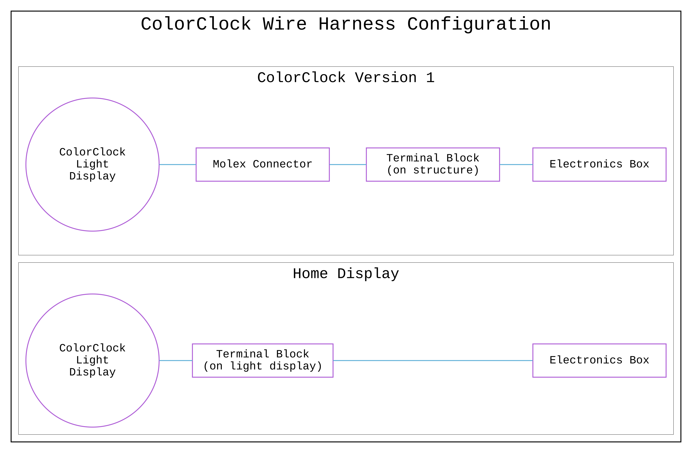
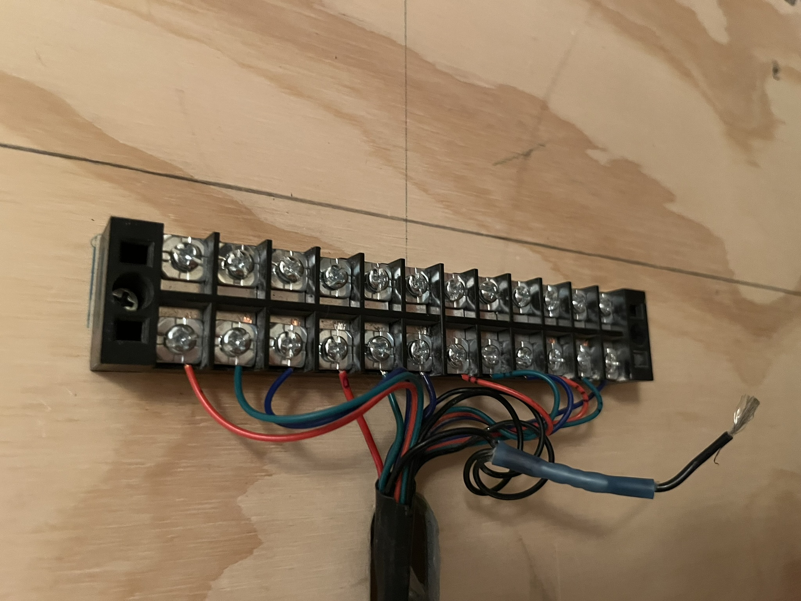

Back In Development
I would like to make the ColorClock code base more robust, so I decided to leverage some of the work I’m doing in my real job and applying it to ColorClock.
Google Test
During development of ColorClock Version 1, I did some rudimentary unit tests that took the form of print statements in simple C++ programs. I played around with writing makefiles but my unit tests were few and far between.
In my latest work, I’m implementing a “real” unit testing framework in using Google Test. Each module has its own test file and I’m using make to build the unit test executable.
Testing Limitations
Since ColorClock is designed to work with specific hardware, some of the code isn’t easily testable using Google Test. However, much (or at least some) of the hardware-dependent functionality is protected by preprocessor directives, providing alternate behavior for non-hardware builds. My goal is to write unit tests for as many functions as possible.
This Is Why We Test
So, I’ve started writing tests for the edge cases in the TimeCalcs module, and guess what? I found some errors in one of the functions 😅
I didn’t run into these issues with ColorClock Version 1 because it was built for a specific use case, but as I expand the project, I need to address them 😬
Google Test Output for TimeCalcs
[==========] Running 5 tests from 1 test suite.
[----------] Global test environment set-up.
[----------] 5 tests from TimeCalcsGroup
[ RUN ] TimeCalcsGroup.TimeAsFractionalOffset_Nominal
[ OK ] TimeCalcsGroup.TimeAsFractionalOffset_Nominal (0 ms)
[ RUN ] TimeCalcsGroup.TimeAsFractionalOffset_Nominal_Swapped
[ OK ] TimeCalcsGroup.TimeAsFractionalOffset_Nominal_Swapped (0 ms)
[ RUN ] TimeCalcsGroup.TimeAsFractionalOffset_Across_Midnight
/home/flux/git/color-clock/sw/test/build-test/../main/test-time-calcs.cpp:69: Failure
Value of: function_output == 0.75
Actual: false
Expected: true
[ FAILED ] TimeCalcsGroup.TimeAsFractionalOffset_Across_Midnight (0 ms)
[ RUN ] TimeCalcsGroup.TimeAsFractionalOffset_Midnight_As_24_End
[ OK ] TimeCalcsGroup.TimeAsFractionalOffset_Midnight_As_24_End (0 ms)
[ RUN ] TimeCalcsGroup.TimeAsFractionalOffset_Midnight_As_0_End
/home/flux/git/color-clock/sw/test/build-test/../main/test-time-calcs.cpp:95: Failure
Value of: function_output == 0.5
Actual: false
Expected: true
[ FAILED ] TimeCalcsGroup.TimeAsFractionalOffset_Midnight_As_0_End (0 ms)
[----------] 5 tests from TimeCalcsGroup (0 ms total)
[----------] Global test environment tear-down
[==========] 5 tests from 1 test suite ran. (0 ms total)
[ PASSED ] 3 tests.
[ FAILED ] 2 tests, listed below:
[ FAILED ] TimeCalcsGroup.TimeAsFractionalOffset_Across_Midnight
[ FAILED ] TimeCalcsGroup.TimeAsFractionalOffset_Midnight_As_0_End
2 FAILED TESTSBuild Flags
I have a file called flux_macros.hpp that defines all the build flags, including preprocessor directives for enabling hardware-specific functionality. This file is included in every software module. One of its macros, DEBUG_CPP, is meant for non-hardware builds. Until now, I’ve had to manually set this flag in the macros file. To streamline the process, I wrote a simple Python script that automatically uncomments the line.
// #define DEBUG_CPPand converts it to:
#define DEBUG_CPPIn the makefile for the unit tests, I create a phony target that runs the Python script first before building out the unit test executable 😎
File Headers
Another improvement I made to give the code a more professional look was adding a comment header to each file. To make this process more efficient, I wrote a Python script that automatically populates the header in each file.
//__________________________________________________________________
//__________________________________________________________________
// _ __ _ _ _ _ _ _ _
// | |_| | _ | | | V | | | | / |_/ |_| | /
// |__ | | |__| |_| | | |_| | \ | | | | \_
// _ _ _ ___ _ _ ___ _ / /
// / | | |\ | \ | | / | | / | \ (^^)
// \_ |_| | \| _/ | | \ |_| \_ | _/ (____)o
//_________________________________________________________________
//_________________________________________________________________
//
//-----------------------------------------------------------------
// Copyright 2024, Rebecca Rashkin
// -------------------------------
// This code may be copied, redistributed, transformed, or built
// upon in any format for educational, non-commercial purposes.
//
// Please give me appropriate credit should you choose to use this
// resource. Thank you :)
//-----------------------------------------------------------------
//
//_________________________________________________________________
// //\^.^/\\ //\^.^/\\ //\^.^/\\ //\^.^/\\ //\^.^/\\ //\^
//_________________________________________________________________We named our artist collective (currently me, Bo, and our friend Cody) ‘Lagomorphic Constructs.’ Lagomorpha is the taxonomic order that includes rabbits—and I love rabbits. So, naturally, I went with ‘Lagomorphic Constructs’ 🐰
Home Display
On a different note, we are also working on installing the light display for ColorClock Version 1 in the house 🏠
I powered it up for the first time since its display at Burning Man 2024 and was thrilled to see that not only did it work, but the time was still accurate thanks to the ’real-time clock module 🎉
The first step to converting it to a home display is to sort out the wiring…

For ColorClock Version 1, the light display’s wiring was terminated with a Molex connector, which connected to a wire harness. The harness then led to a 12-way terminal block mounted on the structure, which interfaced with the electronics box.The diagram above was generated using DOT, a scripting language for creating vector images. It’s another technology I use at work and have recently started incorporating into ColorClock.

For home display, we removed the wire harness from Version 1 and directly connected the LED strips to the terminal block, which we relocated to the back of the light display.TODO
Moving forward, I have a few tasks on my to-do list that I’ll continue chipping away at…
Unit Tests
- Write unit tests for modules:
- TimeCalcs
- RgbColor
- HsvColor
- ColorClock
- TimeController
- TimeDisplay
- TopLevel
- Fix code for failures found during unit testing
- Create a pipeline that runs all unit tests
Documentation
- Make block diagrams of the software architecture of ColorClock using DOT
- Add Doxygen comments and generate documentation
Cleanup
- Organize ColorClock classes into folders
- Clean up non-Arduino code
Hardware
- Prototype a small harware version of the light display for testing purposes
- Research free PCB board layout programs